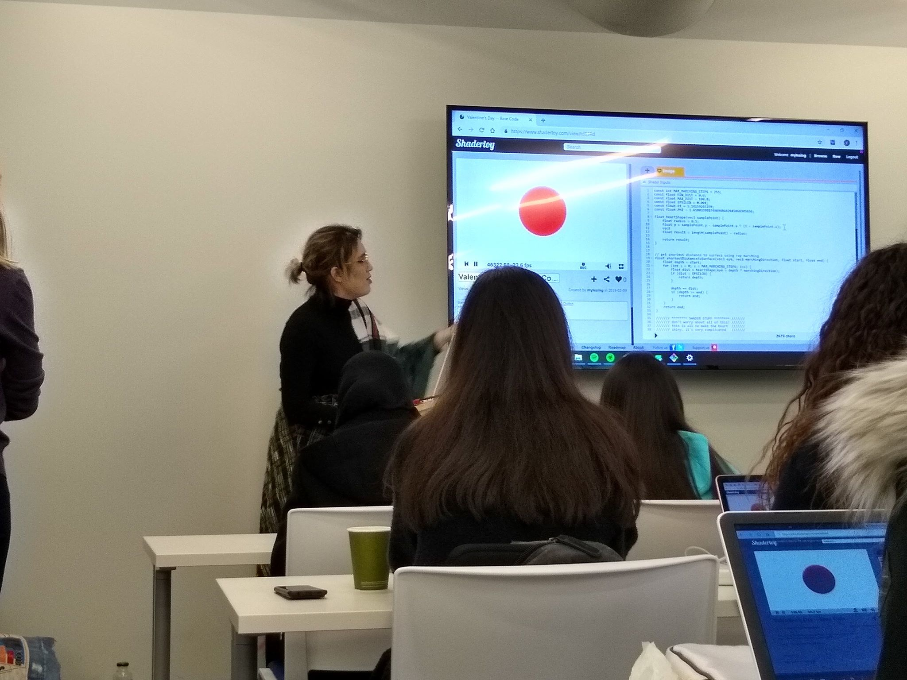
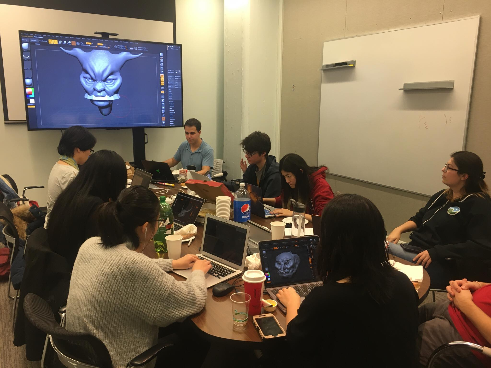
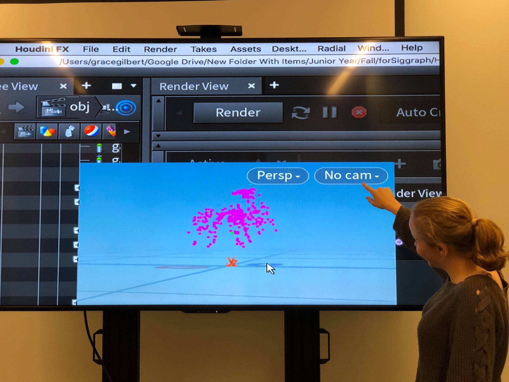
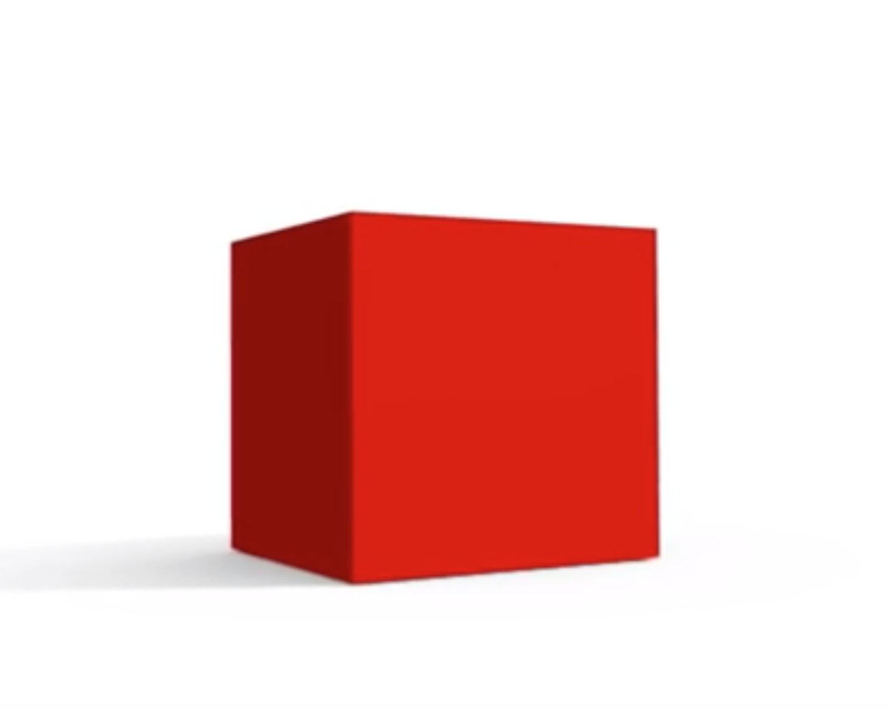
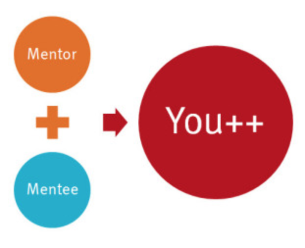
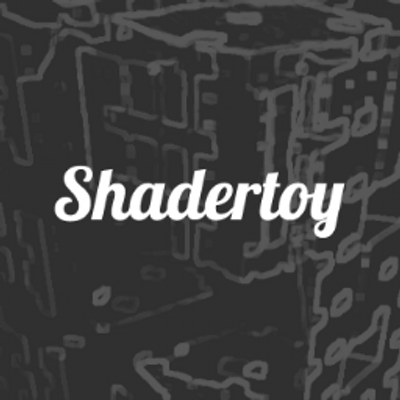

Past Events

FEMMEHACKS WORKSHOP
2/9/2019
For FemmeHacks, an women centric Hackathon, Myles Al Yafei organized a workshop around ShaderToy and the technique of ray-tracing.RESUME WORKSHOP
2/8/2019
For this workshop, we went through resumes and critiqued and provided advice for students that submitted them ahead of time. Additionally, we looked at other resumes for examples of good and back practices along with different formatting and topics that can be brought up in them.Resources

ZBRUSH WORKSHOP
11/30/2018
The Zbrush workshop introduced new students to the interface of ZBrush. The first half of the workshop was a mini-lecture to discuss the tools available to sculpt digitally. The other half was spent on creating individual models.
WEBSITE WORKSHOP
11/03/2018
This workshop went over the basics of web design and development, from the most efficient frameworks to how to publish the website. Attendees learned about different ways to integrate html, css, and javascript to achieve various designs, and how to utilize Bootstrap, one of the most popular website frameworks, to expedite the development process.Resources

HOUDINI WORKSHOP
11/02/2018
The Houdini workshop was an opportunity for students to learn the basics of Houdini. Students learned modeling and animation techniques to become familiar with Houdini’s interface and tools. They then continued to particle simulations, where they built fountains and fireworks.
DEMO REEL NIGHT
10/19/2018
Students submitted links to their demo reels ahead of time to be critiqued. During the critique we had recent alumni video in to provide live feedback and give a chance for the students to ask questions and/or advice. Additionally, older alumni provided more feedback afterwards that was compiled by our board and sent directly to the students. We also went through good demo reel practices and, as always, showed off the infamous 2011 Dono Reel. Much thanks to Jeremy Newlin ('14), James Bartolozzi ('16), Max Gilbert ('16), Richard Lee ('17), Mariano Merchante ('17), Isabela Rovira ('18), and Daniel Mcann ('18)!Resources

RESUME/COVER LETTER WORKSHOP
10/12/2018
For this workshop, we went through resumes and critiqued and provided advice for students that submitted them ahead of time. Additionally, we passed out past cover letters for examples of good and back practices along with different formatting and topics that can be brought up in them.Resources

MENTOR/MENTEE MIXER
9/28/2018
Thank you to everybody who came to our Mentor/Mentee Mixer! It was great to see faces new and old. The Mixer was for students who are interested in finding a mentor or a mentee in the CG@Penn community.
